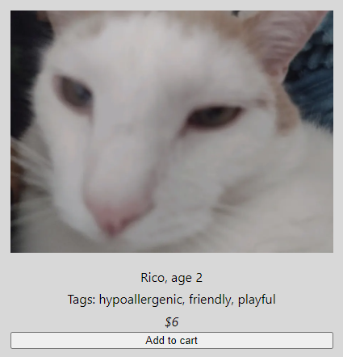
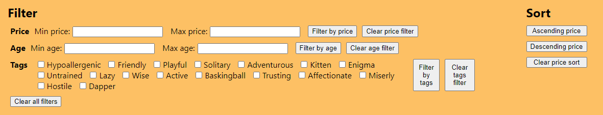
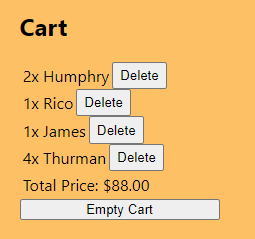

Development
Context
Having spent so much time learning and practicing the many principles of good design, this project sought to shift gears and challenge students to actually implement some of the types of functionality we've been designing into our interfaces. Using React, students were asked to develop a web app with some number of "items" which could be filtered, sorted, and aggregated in different capacities.
Implementation
I decided to make Kitty Kingdom, a site for users to browse various cats available for sale (or perhaps adoption?) and keep track of them with a cart. This choice was primarily driven by the fact that cats are silly little fellas and I knew it would be more fun to come up with pretend cats than pastries. Each cat has a name, age, price, and a set of descriptive tags that apply to them.
Rico is one of many kitties listed on Kitty Kingdom.
My goal was to allow users to filter by price and age by inputting an acceptable range, as well as by tags by checking off all the tags that they wanted their cat(s) to have. I also planned to allow users to sort by price, so they can find the cheapest cats matching their criteria, and finally to add cats to their cart, which also tracks the total price they've accumulated to avoid going over budget.

The filtering and sorting interface of Kitty Kingdom.

The Kitty Kingdom cart with a selection of kitties added.
To take best advantage of the React framework, I made use of state to track user inputs and update the cart and displayed kitties as needed. Each filter criteria has the appropriate type and number of input fields, and for sorting by price there are buttons for ascending and descending. Each of these also has an option to remove that filter/sort, returning to the unmodified state. When pressed, these buttons update the corresponding state variables, in turn prompting React to automatically re-render all the kitties on display with the applicable new criteria (or lack thereof). The Cart functions similarly, with each kitty having a button to add it to the cart that updates both the contents of the cart and the total price in their state variable forms, which causes React to re-render the on-screen cart with the updated values.
The Final Product
You can take a look at the final product here.
I would encourage you to play around with the various filtering and sorting mechanisms, as well as adding kitties to your cart. It's worth noting that different filters and sorts can all be in effect at once to attain utmost precision in your kitty selection.
Conclusion
Looking back on this project, I think the user interface could definitely use some work from an aesthetic point of view; I largely stuck with the default text fields, buttons, and other components due to simplicity and the fact that functionality was my main priority. I do think that the functional parts of the interface are intuitive and well laid out. I aimed to be consistent with other online shopping interfaces with a means to search/filter/sort at the top, the results displayed below, and a cart on the right side. Functional items inputs and outputs alike are clearly labeled, and do in fact update as needed to meet the criteria of the project, so all in all I'm happy with how this turned out.
Going forward, it definitely feels good to have experience with both coming up with designs and actually implementing some commononly found features.